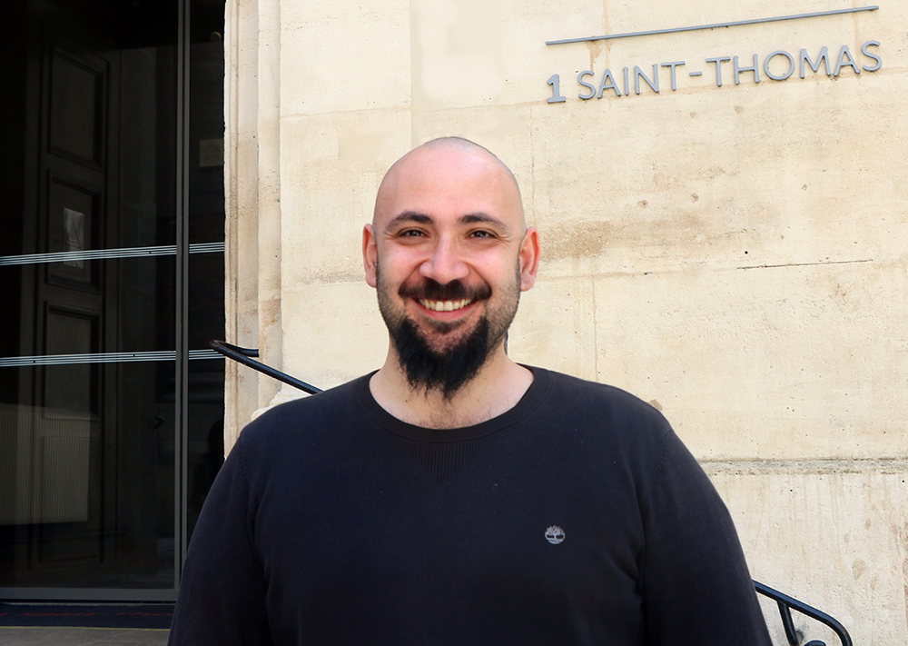

Human mobility
Uncovering the universal and individual patterns that govern how people move through cities and regions.
Selected work →Senior Researcher · CNR, Italy
I am Luca Pappalardo, a Senior Researcher at the Institute of Information Science and Technologies (ISTI) of the National Research Council of Italy (CNR), and an Associate Professor at Scuola Normale Superiore of Pisa, Italy. My research explores human mobility, urban systems and the feedback loops between people and artificial intelligence.

About
My work lies at the intersection of AI, complexity science and computational social science. I use large-scale data, network analysis, mathematical models and simulation to understand how people move, interact and make decisions.
I am especially interested in how algorithmic systems reshape cities and society, and in designing human-centred AI that aligns individual choices with collective goals.
Research agenda
From individual traces to collective outcomes: I combine empirical evidence and computational models to study complex social systems.
Uncovering the universal and individual patterns that govern how people move through cities and regions.
Selected work →Understanding traffic, accessibility, segregation and inequality through data-driven models of cities.
Selected work →Studying how algorithms influence collective behaviour—and how to design them for the public good.
Current projects →Selected publications
2026
How routing services can concentrate traffic and produce unintended collective effects in urban road networks.
20XX
A concise, one-sentence description of the question, approach or main result.
20XX
Use this optional summary to make the significance clear to readers outside your field.
Projects
Principal Investigator · 2026–2031
A five-year research project funded with €1.4 million by the Italian Ministry of University and Research (MUR) through a Fondo Italiano per la Scienza (FIS) Consolidator Grant. The project investigates how AI-driven platforms reshape cities, and how urban environments in turn shape the algorithms that influence them.
Visit project website ↗Tomorrow’s cities will be shaped by the feedback loops between people, algorithms and places.
Latest
New research on the traffic concentration effects of urban navigation services is published in Nature Communications.
CAIO launches with a five-year FIS Consolidator Grant to study city–AI coevolution.
Replace this row with a recent talk, award, publication, media appearance or open position.
Contact
For research collaborations, speaking invitations and student opportunities, feel free to get in touch.
name.surname@cnr.itISTI-CNR · Via G. Moruzzi 1 · 56124 Pisa, Italy